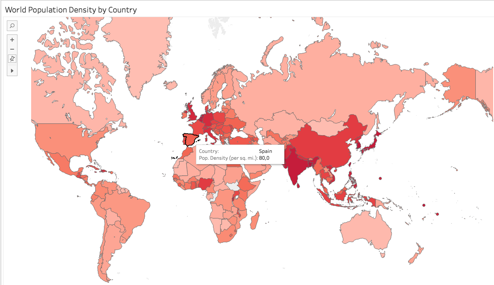
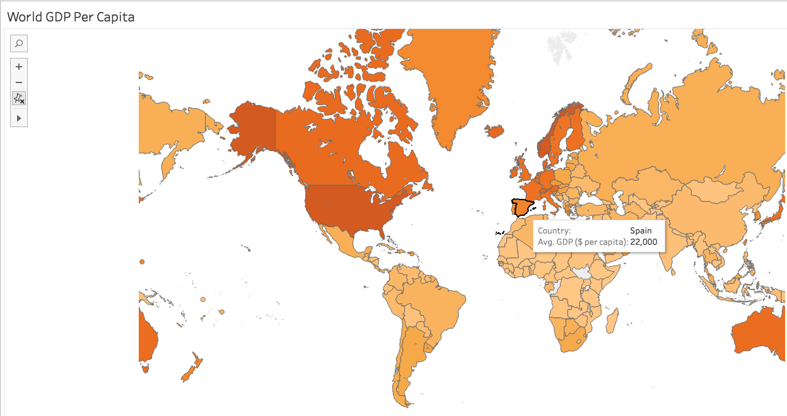

In this lab, we will practice creating visualizations using the many types of charts and graphs that come with Tableau.
The data we will be creating visualizations for will be an American football team statistics data set. The data contains information about individual games teams played, who the opposing team was, what the scores were, and a variety of statistics describing how the team played. You don’t have to be familiar with the sport to create the visualizations for this lab, but if you’re interested in gaining some context, you can watch this YouTube video for a brief high-level overview and read this Wikipedia entry to gain a better understanding of the positions and statistics.
As in the last lab, if you get stuck on any of the tasks in this lab, you can reference the excellent training video resources provided on the Tableau website.
Challenge 1
To complete this lab, follow each of the steps below.
Open Tableau and import the nfl_football_team_stats.csv file.
[OPTIONAL] Change the data type of the Year field to string.
We change Year to string because in this lab we treat it as a categorical data. In some uncommon cases Tableau has issues by treating year as a number when we use it as categorical variable.
In a lot of times software has bugs and data analysts need to document these issues and their work-around so that they know how to avoid the same issues in their future work.
Let’s start our analysis by looking at the number of games played per year.
Drag the Number of Records measure to Rows.
Drag the Year dimension to Columns.
You now see a bar chart with Number of Records as the Y axis and Year as the X axis.
You should also notice that 2017 has fewer games than previous years. Guess why? Yes, it indicates this data was likely collected midway through the 2017 season. This is something we should keep in mind, especially when comparing sums of statistics across seasons.
You’re almost there. However, this visualization is still not “number of games played per year”. Why? How to fix the issue?
Hint: read the actual data to figure out why. And modify the Rows formula to fix the issue.
After you fix the measure, drag it from Rows to Measures to create a new measure. Rename it to Number of Games so that you can reuse it later.
Now we want to visualize the win/loss proportions of each team by year using pie charts. Follow the steps below:
Create another worksheet that contains a tabular visualization with the number of records by Team. This can be achieved by dragging the Number of Records measure to Rows, then dragging the Team dimension into the Number of Records bar in the visualization panel.
Drag the Year and Result dimensions into Columns so that we can see the number of wins vs. losses for each team and year.
From the Show Me menu at the top right of the screen, select the pie chart visualization. This will create a pie chart for each team-year combination showing the proportion of wins to losses.
Make sure that the Team field is in the Row section and the Year field is in the Columns section after you add the pie charts. Tableau will sometimes reverse the axes when you change visualizations. If Tableau reversed the axes, go to the Analysis menu option and select Swap Rows and Columns.
Change the pie chart colors so that the wins are red and the losses are blue by clicking on Color in the Marks menu.
Add data labels by dragging the Number of Records measure to the Labels square in the Marks section.
Change the drop-down selection at the top center of the screen from Standard to Fit Width so that you can see all the win/loss pie charts for a team across years.
Let’s try to determine whether playing at home or away has an impact on how often a team wins.
Create a new sheet that contains a side-by-side bar chart showing Number of Records by Result and Game Location (columns). We should be able to see from this visualization that the home team has won approximately 280 more games than the away team over the last several years. Considering the total number of games, do you think this advantage is significant?
We can determine a team’s effectiveness on offense and defense by the number points they score and then number of points their opponents score on the respectively.
Create a scatter plot that shows Average Team Score (rows) and Average Opponents Score (columns) with a different color plot point for each team (drag the Team field to the color box in the Marks section).
Also drag the Team field to the Labels box so that the team names display next to their plot points where possible.
You will notice that the plot points are pretty tightly clustered together in the upper right hand corner of the chart. Adjust both axes to start at 16 so that we can get a closer view of the relationships between points scored and points allowed. You can do this by right-clicking on each axis, selecting Edit Axis, and setting it to Fixed with a start value of 16.
Next, we will look at passing statistics in Year 2016, which will show us how strong a team’s passing abilities are.
Create a new sheet containing a tabular visualization that shows Passing Attempts and Passing Completions measures (Columns) by Team (Rows).
Filter the data for just 2016 by dragging the Year field into the Filters section and selecting 2016 from the options presented.
Create a calculated field (Analysis > Create Calculated Field) called Completion Percentage that represents Passing Completions divided by Passing Attempts and add it to your tabular visualization. By default, Tableau will sum it, so you will need to change it to show the average. To do this, click on the drop-down arrow of the metric in Measure Values, select Measure, and change the selection from Sum to Average.
Note you don’t want to change the Measure in Marks because it will change all your meansures including SUM(Passing Completions), SUM(Passing Attempts), and SUM(Completion Percentage). You only want to change SUM(Completion Percentage) to AVG(Completion Percentage).
Change the number format for the Completion Percentage field to percentage. The procedure is similar to changing its average measure in the previous step.
Finally, sort your visualization by Average Completion Percentage. Which team in 2016 had the highest percent of pass completions?
Let’s look at Percentage Completion as a more interesting visualization than just a table.
Create a treemap visualization containing labels for Team and Average Completion Percentage.
Average Completion Percentage should inform both the size of the boxes and the colors. For the colors, choose the Red-Blue Diverging palette so that teams with high percentages are colored blue and ones with low percentages are colored red.
Filter the data for 2017 by dragging the Year field into the Filter section and see how the visualization changes. You can also add a filter box by selecting Analysis > Filters > Year. Change the filter to 2016 and then to 2015 using the filter box we just added and note how the visualization changes.
Let’s look at how some defensive statistics - specifically, the average number of sacks, interceptions, and safeties for each team when they win.
Start by creating a new sheet containing a tabular visualization showing Average Sacks, Average Interceptions, and Average Safeties by Team (rows). Remember that Tableau will sum each of the measures by default, so you will need to change each measure to display the average instead of the sum. To do this, click on the drop-down arrow for each metric, select Measure, and change the selection from Sum to Average.
Filter the data for only games the teams won by by dragging the Result field to the Filters section and selecting Win.
Open the Show Me menu in the upper right hand corner of the screen and select the horizontal bar chart option. You should see a set of horizontal bars for each metric we chose for each team.
Add labels and colors for each metric by dragging the metric onto the appropriate box within the Marks section. Notice that each metric has it’s own subsection within the Marks section, so make sure you are dragging over the appropriate metric.
Let’s create one last visualization that shows how well each team’s defense prevents its opponents from scoring.
Create a new sheet containing a tabular visualization that shows Opponent Score by Team. Remember that Tableau will sum each of the measures by default, so you will need to change each measure to display the average instead of the sum. To do this, click on the drop-down arrow for this metric, select Measure, and change the selection from Sum to Average. This will show us the average number of points each team has allowed their opponents to score against them.
Suppose we wanted to see not only the overall averages but also how widely that varied based on the opposition. We could view this with a box-and-whisker plot visualization. To create one, select box-and-whisker plot from the Show Me menu at the top right of the screen.
To get our plot to show what we want, we will need to make a few adjustments. Move the Team field pill that is currently in the Marks section to the Columns section. This will produce a column for each team.
Next, we will need to drag and drop the Opponent field into the Details box of the Marks section. This will expand the box and whiskers in the visualization, allowing us to see how the averages vary based on the opposing team instead of just the overall average.
Let’s combine some of the visualizations we have created into a dashboard.
Create a dashboard by going to Dashboard > New Dashboard.
Add 2-3 visualizations you created to the dashboard by dragging and dropping each sheet to the dashboard.
If your dashboard is too small, you can change its size by selecting the Size dropdown from Fixed Size to Automatic. Tableau will then automatically resize the visualizations to the screen.
In Automatic size, you can also adjust the height of each visualization charts being displayed to achieve the optimal visual effect.
Add a title to the dashboard by checking the Show dashboard title checkbox at the lower left of the screen. Edit the dashboard title to be NFL Team Performance Dashboard.
Save your work to Tableau Public, ensure that your workbook is viewable, and copy the URL for the workbook into the deliverables file for this lab.
Bonus Challenge
Use the countries of the world.csv dataset, create two data visualization maps for:
World GDP Per Capital. Choose a color palette to visualize country GDP Per Capital where deeper color indicates higher GDP Per Capital. Your dataviz should look like below:
World GDP Per Capital
World Population Density by Country. Choose a color palette to visualize country population density where deeper color indicates higher population density. Your dataviz should look like below:
World GDP Per Capital
Create a dashboard to display both dataviz maps and save it to Tableau Public. Ensure that your workbook is viewable, and copy the URL for the workbook into the deliverables file for this lab.
Deliverables
main.txt file with a link to your Tableau Public workbooks.
Submission
Upon completion, add your deliverables to git. Then commit git and push your branch to the remote.